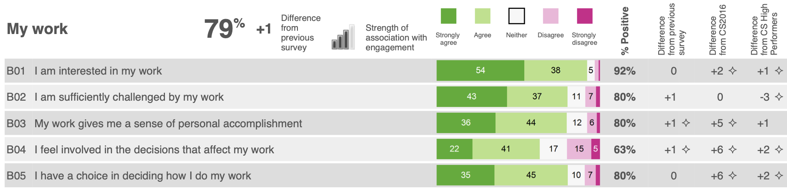

Source: author's recreation from the technical guide to the Civil Service People Survey (Cabinet Office, 2014)
The Civil Service People Survey’s analytical framework is based around the concept of “employee engagement”. Historically survey outputs (including organisational and team reports) used to illustrate how different themes within the survey were ‘drivers’ of employee engagement.
Over the years this focus has been somewhat lost, initially through a methodology change by a contractor switching to simple question-level correlation and more recently with a change in the reporting infrastructure that made it more operationally difficult to implement.
This article recaps the historic analytical framework, replicates the analysis (as far as is possible) and explains how this has been used in the presentation of results on this website. For a simpler guide that summarises only the framework and outputs of the driver analysis please read the driver analysis guide instead.
An analytical framework for employee engagement
The Cabinet Office (2014, p13) defines ‘employee engagement’ as follows:
Employee engagement is a workplace approach designed to ensure that employees are committed to their organisation’s goals and values, motivated to contribute to organisational success, and are able at the same time to enhance their own sense of well-being.
The survey’s analytical framework posits that “by taking action to improve our people’s experiences of work we increase levels of employee engagement which raises performance and enhances wellbeing” (Cabinet Office 2014, p12), see Figure 1.
The People Survey operationalises its measurement of employee engagement through and ‘engagement index’ made up of five questions that measure levels of “pride, advocacy, attachment, inspiration and motivation” (Cabinet Office 2014) (ADD LINK TO EE ARTICLE). The ‘experiences of work’ described in the analytical framework relate to the nine themes of the survey’s core questionnaire that precede the five questions of the engagement index.
Historic driver analysis
The questions in the core questionnaire preceding the engagement index are grouped based on a factor analysis1 of the 2009 People Survey results, providing the nine core survey themes: my work; organisational objectives and purpose; my manager; my team; learning and development; inclusion and fair treatment; resources and workload; pay and benefits; and, leadership and managing change.
From 2009 to 2018 the PDF-reports of People Survey results for organisations and teams included the results ‘driver analysis’ that reported the relationship between the engagement index and the nine main themes of the survey. The driver analysis was presented in three places within the PDF reports: on the front page of the report (Figure 2 (a)), a dedicated summary table (Figure 2!), and alongside the presentation of the question results for each theme (Figure 2 (c)).



Source: Cabinet Office (2016)
The driver analysis was based on a linear regression model of the ‘factor scores’ against the engagement index to determine the ‘strength of association’ between each theme and levels of employee engagement. This analysis was run for each organisation with at least 100 respondents, it was also run in all sub-units (below the overall organisation level) with at least 150 respondents, smaller units inherited the analysis results of their parent unit/organisation. The beta coefficients from the regression analysis were then used to assign one of five icons that illustrated the strength of association between a theme and the engagement index. The icons used mimicked the icons used by mobile phones to indicate signal strength: an icon with 4 full bars indicated a strong relationship and an icon with 0 full bars indicated no statistically significant relationship had been identified.
In 2009 the linear regression analysis was based on the observed mean scores of the questions making up the engagement index and each of the nine themes. However, this methodology was flawed owing to multicollinearity between the theme scores as it results in bizarre outputs suggesting that levels of employee engagement are negatively related to certain themes. In 2010 I instituted a change to the methodology to base the analysis on ‘factor scores’ to removed this multicollinearity.
In 2018, after I had stopped being directly involved in the People Survey, the contractor instituted a methodological change to focus on question-level correlation and regression analysis. In 2020, a change in contractor resulted in a switch to a new online-only reporting platform, ending the production of organisation- and team-level PDF reports. This new platform also significantly increase the level of effort and complexity required to re-implement the historic approach to driver analysis.
Recreating the driver analysis
Personally, I believe abandoning driver analysis has a negative impact on interpreting the results of the People Survey as it hampers people from understanding where they can best focus action on improving results.
This website is based only on the publicly available People Survey data published by the Cabinet Office, therefore it is not possible to directly replicate the historic driver analysis since this was based on the individual level People Survey responses. Instead, in this article I’ve used the published organisation scores as the source data to recreate the driver analysis, providing a dataset with 1,652 observations.
Demonstrating multicollinearity
I mentioned above instituting a change in 2010 to conduct the driver analysis using ‘factor scores’ that are output from the factor analysis used to group the survey questions into themes. This is due to multicollinearity in the data if we run a regression analysis between the engagement index and the simple percent positive scores for each theme (the theme scores published in the data, including internal reporting).
But what does this mean in practice? Multicollinearity means that there is a high degree of correlation between the predictive variable in the regression model meaning it is not easy to determine the true relationship between a given predictive variable and the outcome variable.
In practice, we can see that the multicollinearity produces coefficients that do not make sense. Table 1 shows the results of a linear regression of the engagement index against the nine theme scores using the organisation scores from 2009 to 2024. We can see in this tables some strange results, namely the presence of negative coefficients for the ‘my manager’ and ‘my team’ themes. This seems counter-intuitive as it would suggest having poor ratings of your manager and immediate colleagues would lead to higher levels of employee engagement, and goes against the vast majority of literature about employee motivation. The coefficient of the ‘pay and benefits’ theme is also not statistically significant. The upper triangle of the correlation matrix shown in Figure 5 also provides a visual representation of the multicollinearity indicating the high degree of correlation between each of the theme scores.
Code
csps_orgs <- arrow::read_parquet(here::here("../csps-data/data/02-organisations/csps_organisations_2009-2024_5b58c24b.parquet"))
org_ee_tm_scores <- csps_orgs |>
dplyr::filter(grepl("^1.", uid_qm_num)) |>
dplyr::mutate(uid_qm_txt = gsub("^000.", "", uid_qm_txt)) |>
dplyr::select(uid_org_txt, year, uid_qm_txt, value) |>
tidyr::pivot_wider(names_from = uid_qm_txt, values_from = value)
org_simple_reg <- lm(
engagement_index ~ my_work + objectives_purpose + my_manager + my_team +
learning_development + inclusion_treatment + resources_workload +
pay_benefits + leadership_change,
data = org_ee_tm_scores
)
org_simple_fit <- broom::glance(org_simple_reg)
org_simple_coefs <- broom::tidy(org_simple_reg)
org_simple_coefs |>
dplyr::mutate(
term = dplyr::case_match(
term,
"my_work" ~ "My work",
"objectives_purpose" ~ "Organisational objectives and purpose",
"my_manager" ~ "My manager",
"my_team" ~ "My team",
"learning_development" ~ "Learning and development",
"inclusion_treatment" ~ "Inclusion and fair treatment",
"resources_workload" ~ "Resources and workload",
"pay_benefits" ~ "Pay benefits",
"leadership_change" ~ "Leadership and managing change",
.default = term
),
across(c(estimate, std.error), scales::number_format(0.001)),
p.value = scales::pvalue(p.value)
) |>
dplyr::select(-statistic) |>
knitr::kable(
col.names = c("", "Coefficient", "Std Error", "p-value"),
align = "lrrr"
)
tibble::tribble(
~statistic, ~value,
"R<sup>2</sup>", scales::number(org_simple_fit$r.squared, 0.001),
"Adjusted R<sup>2</sup>", scales::number(org_simple_fit$adj.r.squared, 0.001),
"F-statistic", scales::comma(org_simple_fit$statistic, 0.1),
"p-value", scales::pvalue(org_simple_fit$p.value),
"df", paste(org_simple_fit$df, scales::comma(org_simple_fit$df.residual), sep = "; "),
"Observations", scales::comma(org_simple_fit$nobs)
) |>
knitr::kable(
col.names = NULL,
align = "lr"
)| Coefficient | Std Error | p-value | |
|---|---|---|---|
| (Intercept) | 0.991 | 1.855 | 0.593 |
| My work | 0.406 | 0.021 | <0.001 |
| Organisational objectives and purpose | 0.110 | 0.014 | <0.001 |
| My manager | -0.100 | 0.022 | <0.001 |
| My team | -0.055 | 0.026 | 0.036 |
| Learning and development | 0.036 | 0.014 | 0.011 |
| Inclusion and fair treatment | 0.142 | 0.030 | <0.001 |
| Resources and workload | 0.106 | 0.021 | <0.001 |
| Pay benefits | 0.014 | 0.008 | 0.061 |
| Leadership and managing change | 0.234 | 0.013 | <0.001 |
| R2 | 0.830 |
| Adjusted R2 | 0.829 |
| F-statistic | 893.0 |
| p-value | <0.001 |
| df | 9; 1,642 |
| Observations | 1,652 |
A brief introduction to factor analysis
Factor analysis is a statistical technique for ‘dimension reduction’, it uses the correlations between variables to detect a smaller number of latent (hidden) variables that lie behind the observed scores and results. The use of factor analysis in social survey analysis posits that these unseen latent variables influence how we respond to survey questions (the observed variables). For example and as seen in Figure 4, the question “I have a choice in deciding how I do my work” is related to both the underlying ‘my work’ factor and the ‘my manager’ factor. This dual loading is somewhat intuitive since having autonomy in your job is both a feature of the work you do and dependent on being given that autonomy by your supervisor.
This connection between a question and multiple latent factors is a key reason for the multicollinearity demonstrated in the previous section. Figure 3 presents a simplified way to think about the difference between theme scores and factor scores. The theme scores published in People Survey outputs are calculated as the percent positive response across the theme’s constituent questions. While the questions have a strong relationship with the theme they have been grouped into they also have relationships with other factors (and thus theme scores), in essence creating an overlap between the theme scores (or in technical terms correlation between the theme scores). The factor scores however can be designed (by using what’s called an ‘orthogonal rotation’) to have only a minimal correlation between each other and thus are a more ‘clean’ measure of the underlying latent variable/concept.
Source: based on the technical guide to the Civil Service People Survey (Cabinet Office, 2014)
The factor analysis model
The input to the factor analysis are the scores for the questions that precede the engagement index in the questionnaire2. As discussed above, the individual level data is not available and so the organisation scores for these questions from 2009 to 2024 have been used as the source data.
Since the People Survey continues to use 9 themes in its structuring of the questionnaire an exploratory factor analysis that extracts 9 factors from the data. As we can see in Table 2 (a) this 9 factor model explains 85% of the variation in the question scores. Table 2 (b) shows that the first 7 factors all have an eigenvalue of greater than 1 (a standard cut-off value for determining which factors to consider in further analysis), and cumulatively these 7 factors account for 81% of the variation. Factors 8 and 9 have eigenvalues of slightly less than 1 but each still account for around 2% of the variation in the dataset, so we’ll review the factor loadings before determining whether to retain or ignore these factors.
Code
qm_input_org <- csps_orgs |>
dplyr::filter(grepl("^2.0", uid_qm_num)) |>
dplyr::add_count(uid_org_txt, uid_qm_num) |>
dplyr::filter(n == max(n), .by = uid_org_txt) |>
dplyr::filter(
!(uid_qm_txt %in% c(
"obj.understanding_purpose", "mgr.poor_performance",
"rwk.clear_expectations", "lmc.organisation_managed_well",
"pay.aware_benefits", "pay.money_worries"
))
) |>
dplyr::select(uid_org_txt, year, name = uid_qm_txt, value) |>
tidyr::pivot_wider(names_from = name, values_from = value)
set.seed(20251712)
fa_model_org <- factanal(
x = dplyr::select(qm_input_org, where(is.numeric), -year),
factors = 9,
scores = "regression", rotation = "varimax"
)
fa_loadings_org <- broom::tidy(fa_model_org) |>
dplyr::mutate(
theme = gsub("(^[a-z]{3})\\..*", "\\1", variable),
.before = variable
)
fa_summary_org <- fa_loadings_org |>
dplyr::select(fl1:fl9) |>
tidyr::pivot_longer(
cols = everything(), names_to = "factor", values_to = "value"
) |>
dplyr::summarise(
eigenvalue = sum(value ^2),
.by = factor
) |>
dplyr::mutate(
factor = as.integer(gsub(".*(\\d)", "\\1", factor)),
prop_var = eigenvalue/nrow(fa_loadings_org),
cuml_var = cumsum(prop_var)
) |>
dplyr::mutate(
eigenvalue = scales::number(eigenvalue, accuracy = 0.001),
prop_var = scales::percent(prop_var, accuracy = 0.1),
cuml_var = scales::percent(cuml_var, accuracy = 0.1)
)
fa_fit_org <- broom::glance(fa_model_org)
tibble::tribble(
~statistic, ~value,
"Number of factors", as.character(fa_fit_org$n.factors),
"Method", "Maximum-likelihood estimation",
"Rotation", "Varimax",
"Variance explained", scales::percent(fa_fit_org$total.variance, 0.1),
"\u03C7<sup>2</sup> (Chi-square) statistic", scales::comma(fa_fit_org$statistic, 0.1),
"p-value", scales::pvalue(fa_fit_org$p.value),
"df", scales::comma(fa_fit_org$statistic),
"Observations", scales::comma(fa_fit_org$nobs)
) |>
knitr::kable(
col.names = NULL,
align = "lr"
)
knitr::kable(
fa_summary_org,
col.names = c(
"Factor", "Eigenvalue", "Variance explained", "Cumulative variance"
),
align = "crrr"
)| Number of factors | 9 |
| Method | Maximum-likelihood estimation |
| Rotation | Varimax |
| Variance explained | 85.0% |
| χ2 (Chi-square) statistic | 13,117.8 |
| p-value | <0.001 |
| df | 13,118 |
| Observations | 1,652 |
| Factor | Eigenvalue | Variance explained | Cumulative variance |
|---|---|---|---|
| 1 | 11.523 | 25.6% | 25.6% |
| 2 | 7.662 | 17.0% | 42.6% |
| 3 | 5.305 | 11.8% | 54.4% |
| 4 | 4.335 | 9.6% | 64.1% |
| 5 | 3.346 | 7.4% | 71.5% |
| 6 | 2.684 | 6.0% | 77.5% |
| 7 | 1.583 | 3.5% | 81.0% |
| 8 | 0.939 | 2.1% | 83.1% |
| 9 | 0.874 | 1.9% | 85.0% |
Figure 4 illustrates the uniqueness scores and factor loadings of each of the 45 questions that were included in the factor analysis model.
The uniqueness score illustrates the amount of variation within the given question that is not covered by the factor model. Some questions in each of the ‘resources and workload’, ‘learning and development’, ‘inclusion and fair treatment’, and ‘my work’ themes all have uniqueness levels greater than or equal to 0.25 (i.e. more than 25% of the variance remains unexplained). It is not possible to know whether this is due to use of organisation score data rather than individual-level response or due to some other reason.
The factor loadings illustrate the correlation between each question and each of the 9 factors in the model. As can be observed in Figure 4:
- Factor 1 has strong, moderate and weak correlation with many questions in the survey, its strongest correlations are with questions in the ‘my manager’ theme but it also has several strong and moderate correlations with questions in the ‘my team’ and ‘inclusion and fair treatment’ themes than others.
- Factor 2 has strong correlations with the questions in the ‘leadership and managing change’ theme, but as with factor 1 it has weak and moderate correlations with many questions across the survey.
- Factor 3 has moderate strong correlations with the questions in the ‘my work’ theme as well as a couple of individual questions in other themes, including the ‘learning and development’ and ‘resources and workload’ themes.
- Factor 4 has strong and moderate correlations with the questions in the ‘resources and workload’ theme.
- Factor 5 has very strong correlations with the questions in the ‘pay and benefits’ theme and only very weak correlations with the other questions in the survey. Similarly the questions in the ‘pay and benefits’ theme only have notable correlations with this factor, they have no or very weak correlation with other factors.
- Factor 6 has strong correlations with questions in the ‘organisational objectives and purpose’ theme as well as moderate correlation with two questions relating to objectives from the ‘my manager’ and ‘resources and workload’ themes.
- Factor 7 has moderate correlations with the career-related questions in the ‘learning and development’ theme and weaker correlations with the learning activities-related questions in that theme. There is only limited correlation with other questions in the survey.
- Factor 8 has moderate correlations with two of the questions in the ‘my team’ theme. There is a weak correlation with the third question in the ‘my team’ theme. All three questions in the ‘my team’ theme have similar or stronger correlation with factor 1.
- Factor 9 has weak correlations with three questions, two questions in the ‘my manager’ theme relating to receiving feedback and the question in the ‘resources and workload’ theme on having clear work objectives. It has a weak negative correlation with the question in the ‘my work’ theme on whether an individual feels they have a choice in how they do their work.
Code
library(ggplot2)
gdf_factor_loadings <- fa_loadings_org |>
dplyr::mutate(y = dplyr::row_number()) |>
dplyr::select(-theme, -variable, -uniqueness) |>
tidyr::pivot_longer(
cols = -y,
names_to = "factor",
values_to = "loading"
) |>
dplyr::mutate(
x = as.integer(gsub(".*(\\d)$", "\\1", factor)),
alpha = abs(loading) <= 0.3
)
gdf_uniqueness <- fa_loadings_org |>
dplyr::mutate(y = dplyr::row_number()) |>
dplyr::select(y, uniqueness)
gdf_theme_borders <- fa_loadings_org |>
dplyr::select(theme) |>
dplyr::mutate(
y = dplyr::row_number() - 0.5,
same_theme = tidyr::replace_na(theme == dplyr::lag(theme), TRUE)
) |>
dplyr::filter(!same_theme)
gdf_question_labels <- fa_loadings_org |>
dplyr::select(variable) |>
dplyr::mutate(y = dplyr::row_number())
loadings_plot <- ggplot(gdf_factor_loadings, aes(x = x, y = y)) +
geom_rect(
data = gdf_uniqueness,
aes(x = 0, fill = uniqueness), colour = NA, width = 0.9, height = 1
) +
scale_fill_distiller(
palette = "PuBu", direction = 1,
guide = guide_colorbar(title = "Uniqueness", order = 1)
) +
ggnewscale::new_scale_fill() +
geom_rect(
aes(fill = loading, alpha = alpha), colour = NA, width = 0.9, height = 1
) +
geom_hline(
yintercept = seq(1.5, 44.5, 1), colour = "#e0e0e0", linewidth = 0.2
) +
geom_hline(
data = gdf_theme_borders,
mapping = aes(yintercept = y),
colour = "#6f6f6f", linewidth = 0.3
) +
geom_text(
aes(
label = scales::number(loading, 0.01),
colour = abs(round(loading, 2)) > 0.75
),
size = 3, family = "IBM Plex Sans", show.legend = FALSE
) +
geom_text(
data = gdf_uniqueness,
aes(
x= 0,
label = scales::number(uniqueness, 0.01),
colour = abs(round(uniqueness, 2)) >= 0.25
),
size = 3.25, family = "IBM Plex Sans", show.legend = FALSE
) +
geom_text(
data = gdf_question_labels,
aes(label = variable, x = -0.6),
size = 3.25, hjust = 1, family = "IBM Plex Sans", colour = "#393939"
) +
scale_fill_gradient2(
low = "#D01C8B", mid = "#F7F7F7", high = "#4DAC26",
midpoint = 0,
guide = guide_colorbar(
title = "Loading", order = 2
)
) +
scale_alpha_manual(
values = c(`FALSE` = 1, `TRUE` = 0.4),
guide = guide_none()
) +
scale_colour_manual(
values = c(`TRUE` = "#ffffff", `FALSE` = "#393939"),
guide = guide_none()
) +
scale_y_reverse(
expand = expansion(),
labels = NULL
) +
scale_x_continuous(
breaks = 0:9,
labels = c("Uniqueness", paste("Factor", 1:9)),
expand = expansion(add = c(2.25, 0)),
position = "top"
) +
labs(x = NULL, y = NULL) +
theme_minimal(
base_size = 10, base_family = "IBM Plex Sans"
) +
theme(
text = element_text(colour = "#393939"),
axis.text.x = element_text(size = 10),
panel.grid = element_blank()
)
inlinesvg::inline_svg_plot(
loadings_plot,
here::here("partials/plots/fa_loadings_plot.svg"),
width = 1200, height = 1000, overwrite = TRUE,
source_note = "Note: loadings between 0 and ±0.3 are shown at 40% transparency.",
web_fonts = svglite::fonts_as_import("IBM Plex Sans")
)
## /Users/matt/code/csps-explorer/partials/plots/fa_loadings_plot.svgNote: loadings between 0 and ±0.3 are shown at 40% transparency.
The relationship between survey themes and factors
The factor analysis model can also produce scores for each factor, providing an estimate for each observation of its notional score on each of the latent variables if they were ‘real’ variables. These scores can then be used in further analysis.
Let’s first look at the correlation of these factor scores with the original theme scores (the simple percent positive response to the questions in each group) as this should further aid our understanding of what each factor represents.
Figure 5 shows the correlation matrix of the engagement index and theme scores with the factor scores, you can see in the upper triangle the high levels of correlation most themes have with each other while in the lower triangle you can see the very low level of correlation between each of the factor scores. Focussing on the square showing the correlations of the theme scores against the factor scores we see patterns that are similar to those in the factor loadings (Figure 4):
- Factor 1 has a very strong correlation with the ‘my manager’ theme score, as well as moderate correlations with the ‘my work’, ‘my team’ and ‘inclusion and fair treatment’ themes. Let’s call this theme ‘management’ as it relates both to respondents’ direct relationship with their direct supervisor but also other issues relating to team and working culture that managers are responsible.
- Factor 2 has a strong correlation with the ‘leadership and managing change’ theme and only weak correlations with the other theme scores, so let’s call this factor ‘leadership’.
- Factor 3 has a strong correlation with the ‘my work’ theme and only weak correlations with the other theme scores, so let’s call this factor ‘work’.
- Factor 4 has a strong correlation with the ‘resources and workload’ theme and only weak correlations with the other theme scores. Let’s call this factor ‘workload’ since in the factor structure it loads more strongly on the workload related questions within the ‘resources and workload’ theme.
- Factor 5 has a very strong correlation with the ‘pay and benefits’ theme and only very weak corelation with the other theme scores, so let’s call this factor ‘pay’.
- Factor 6 has a very strong correlation with the ‘organisational objectives and purpose’ theme. Since this theme has moderate loading with other questions relating to an individual’s work objectives, let’s call this theme ‘objectives’.
- Factor 7 has a moderate correlation with the ‘learning and development’ theme and is only weakly correlated with the other theme scores. In the factor structure this factor loads more strongly on the questions relating to career development and since the questions relating to learning activities have correlations with other factors let’s call this one ‘career’.
- Factor 8 has a moderate correlation with the ‘my team’ theme and only minimal correlation with the other theme scores. Even though the questions in the ‘my team’ theme have strong correlation with factor 1 than factor 8 let’s still call this ‘teamwork’ since it does not correlate with any other measures in the survey.
- Factor 9 has no strong or moderate correlation with any of the nine main theme scores. Recalling from the factor structure that its strongest loadings are on questions relating to feedback and work objectives let’s call this factor ‘feedback’.
Code
fa_scores_org <- org_ee_tm_scores |>
dplyr::bind_cols(broom::augment(fa_model_org)) |>
dplyr::select(-.rownames) |>
dplyr::rename(
f1_management = .fs1,
f2_leadership = .fs2,
f3_work = .fs3,
f4_workload = .fs4,
f5_pay = .fs5,
f6_objectives = .fs6,
f7_career = .fs7,
f8_teamwork = .fs8,
f9_feedback = .fs9
)
tm_fs_corr <- fa_scores_org |>
dplyr::select(engagement_index:f9_feedback) |>
as.matrix() |>
Hmisc::rcorr()
tm_fs_cor_tidy <- broom::tidy(tm_fs_corr) |>
dplyr::mutate(
across(
c(column1, column2),
~factor(.x, levels = names(fa_scores_org)[c(-1, -2)])
),
alpha = !(p.value < 0.05),
)
tm_fs_plot <- ggplot(tm_fs_cor_tidy, aes(x = column2, y = column1)) +
geom_rect(
fill = "#ffffff", width = 1, height = 1
) +
geom_rect(
aes(fill = estimate, alpha = alpha), colour = "#e0e0e0",
width = 1, height = 1
) +
geom_hline(
yintercept = 9.5, linewidth = 0.3, colour = "#6f6f6f", linetype = "dashed"
) +
geom_vline(
xintercept = 10.5, linewidth = 0.3, colour = "#6f6f6f", linetype = "dashed"
) +
geom_text(
aes(label = scales::number(estimate, 0.01), colour = round(estimate,2) > 0.75),
size = 3, family = "IBM Plex Sans"
) +
scale_fill_gradient2(
low = "#D01C8B", mid = "#F7F7F7", high = "#4DAC26",
midpoint = 0,
guide = guide_colorbar(
title = NULL
)
) +
scale_alpha_manual(
values = c(`TRUE` = 0, `FALSE` = 1),
na.value = 0,
guide = guide_none()
) +
scale_colour_manual(
values = c(`TRUE` = "#ffffff", `FALSE` = "#393939"),
guide = guide_none()
) +
scale_x_discrete(
position = "top",
expand = expansion(add = 0.75),
drop = FALSE
) +
scale_y_discrete(
limits = rev,
expand = expansion(add = 0.75, 0),
drop = FALSE
) +
labs(y = NULL, x = NULL) +
coord_fixed() +
theme_minimal(base_family = "IBM Plex Sans", base_size = 10) +
theme(
text = element_text(colour = "#393939"),
axis.text.x = element_text(angle = 45, hjust = 0, vjust = 0),
panel.grid.major.x = element_line(
colour = "#e0e0e0", linewidth = 0.2
),
panel.grid.major.y = element_blank()
)
inlinesvg::inline_svg_plot(
tm_fs_plot, here::here("partials/plots/tm_fs_correlation.svg"),
width = 950, height = 840, overwrite = TRUE,
source_note = "Note: correlations that are not statistically significant (p > 0.05) have a white background.",
web_fonts = svglite::fonts_as_import("IBM Plex Sans")
)
## /Users/matt/code/csps-explorer/partials/plots/tm_fs_correlation.svgNote: correlations that are not statistically significant (p > 0.05) have a white background.
The updated driver analysis
Now that factor scores have been calculated the regression model for the driver analysis can be updated to regress the factor scores against the engagement index instead of the theme scores, Table 3 shows the results of the regression model.
Before discussing the model results, it is worth noting that the R2 for the factor scores model is somewhat higher (0.843) than that of the model using theme scores (0.830). This suggests that using the factor scores provides a better way of explaining the variation in the engagement index than the theme scores.
Table 3 shows the standardised, or beta, coefficients from the model as the engagement index and factor scores operate on different scales3.
The ‘leadership’ factor and the ‘my work’ factor have the strongest effect and have similar levels of impact (coefficients of 0.519 and 0.485 respectively) on the engagement index. These are followed by the ‘management’ factor (0.338), the ‘workload’ and ‘objectives’ factor (0.256 and 0.240 respectively), and then ‘pay’ and ‘career’ factors (0.157 and 0.151 respectively). The ‘teamwork’ factor has only a limited effect on the engagement index (0.084), while the ‘feedback’ factor does not have a statsitically significant effect.
Code
drivers_fa <- lm(
engagement_index ~ f1_management + f2_leadership + f3_work +
f4_workload + f5_pay + f6_objectives + f7_career + f8_teamwork +
f9_feedback,
data = fa_scores_org
)
drivers_beta <- lm.beta::lm.beta(drivers_fa)
drivers_fit <- broom::glance(drivers_fa)
drivers_coefs <- broom::tidy(drivers_beta)
drivers_coefs |>
dplyr::mutate(
term = dplyr::case_match(
term,
"f1_management" ~ "Factor 1: Management",
"f2_leadership" ~ "Factor 2: Leadership",
"f3_work" ~ "Factor 3: My work",
"f4_workload" ~ "Factor 4: Workload",
"f5_pay" ~ "Factor 5: Pay",
"f6_objectives" ~ "Factor 6: Objectives",
"f7_career" ~ "Factor 7: Career",
"f8_teamwork" ~ "Factor 8: Teamwork",
"f9_feedback" ~ "Factor 9: Feedback",
.default = term
),
across(c(std_estimate, std.error), scales::number_format(0.001)),
p.value = scales::pvalue(p.value)
) |>
dplyr::select(term, std_estimate, std.error, p.value) |>
knitr::kable(
col.names = c("", "Beta coefficient", "Std Error", "p-value"),
align = "lrrr"
)
tibble::tribble(
~statistic, ~value,
"R<sup>2</sup>", scales::number(drivers_fit$r.squared, 0.001),
"Adjusted R<sup>2</sup>", scales::number(drivers_fit$adj.r.squared, 0.001),
"F-statistic", scales::comma(drivers_fit$statistic, 0.1),
"p-value", scales::pvalue(drivers_fit$p.value),
"df", paste(drivers_fit$df, scales::comma(drivers_fit$df.residual), sep = "; "),
"Observations", scales::comma(drivers_fit$nobs)
) |>
knitr::kable(
col.names = NULL,
align = "lr"
)| Beta coefficient | Std Error | p-value | |
|---|---|---|---|
| (Intercept) | NA | 0.075 | <0.001 |
| Factor 1: Management | 0.338 | 0.076 | <0.001 |
| Factor 2: Leadership | 0.519 | 0.076 | <0.001 |
| Factor 3: My work | 0.485 | 0.078 | <0.001 |
| Factor 4: Workload | 0.256 | 0.079 | <0.001 |
| Factor 5: Pay | 0.157 | 0.076 | <0.001 |
| Factor 6: Objectives | 0.240 | 0.076 | <0.001 |
| Factor 7: Career | 0.151 | 0.083 | <0.001 |
| Factor 8: Teamwork | 0.084 | 0.076 | <0.001 |
| Factor 9: Feedback | -0.013 | 0.080 | 0.201 |
| R2 | 0.843 |
| Adjusted R2 | 0.842 |
| F-statistic | 978.6 |
| p-value | <0.001 |
| df | 9; 1,642 |
| Observations | 1,652 |
Reporting the driver analysis
As discussed above the previous driver analysis had used a set of icons that mimicked the icons used by mobile phones to indicate signal strength. I believe this continues to be a useful visual metaphor/semiotic for demonstrating the regression coefficients. The specific values of the coefficients are not helpful and are not easily interpretted, even by professional analysts, that does not mean they are irrelevant - they tell us that the ‘leadership’ factor has a notably stronger impact on the engagement index than the ‘pay’ factor. So we can continue to use some form of symbols to communicate this difference.
However, the factor structure we have extracted from the data we have available does not align as neatly to the theme scores as that produced in 2009 based on the individual respondent-level data. The survey’s ‘learning and development’, ‘inclusion and fair treatment’ and ‘resource and workload’ themes have a complex relationship with the factor structure having theme and question level correlations with multiple factors.
To help people, both inside and outside the UK Civil Service, better understand the results of the People Survey I have included the outcomes of this driver analysis elsewhere on this website, in particular in the Civil Service and organisation results sections and a simpler driver analysis guide (TBC).
In presenting the driver analysis I’ve adapted the framework diagram in Figure 1 to include the results of the factor analysis. Figure 6 uses the correlations from Figure 5 and the coefficients from Table 3 to demonstrate the relationship between the theme scores, the factors (which for lay audiences I’ve labelled ‘engagement drivers’) and the engagement index. The arrows between the themes and factors show both the dominant correlations (those greater than 0.5) as well as some of the more moderate ones (those greater than or equal to 0.4), the arrows are dual-headed to indicate that the themes (and their consitutent questions) and the factors are in-effect two different ways of looking at the same information. The arrows between the factors and the employee engagement index represent the coefficients from the regression model and are a simple arrow flowing from the factor to the engagement index, to imply that by taking action on the areas covered by the factors should have an impact on the engagement index4. The thickness of each arrow is proportionate to the relative size of the correlations and coefficients.
In the results sections of this website, as with the historic driver analysis, I’ve again opted to use a “signal bars” symbology, but have simplified it to three levels:
-
Strong association: themes connected to the factors with the beta cofficients above 0.4, namely the ‘leadership and managing change’ and ‘my work’ themes since these are closely associated with factors 2 and 3. -
Moderate association: themes connected to factors beta coefficients between 0.2 and 0.4, namely the ‘my manager’ (factor 1), ‘resources and workload’ (factor 4) and ‘organisational objectives and purpose’ (factor 6). In addition to these theme-factor combinations, the ‘my team’ and ‘learning and development’ themes have also been included given their more complex relationship exposed through the factor and driver analysis.The ‘my team’ theme has a stronger correlation with factor 1 (management) than it does with its own unique factor, factor 8 (teamwork). The ‘learning and development’ theme is correlated with multiple factors, not only factor 7 (career) but also factor 1 (management), factor 3 (work) and factor 4 (workload). These more complex relationships suggest these themes still have a moderate impact on the engagement index, albeit indirectly. -
Weak association: the remaining theme, namely ‘pay and benefits’, is only closely related to a single factor (factor 5) which has a beta coefficient of less than 0.2.
In summary
…
References
Cabinet Office. 2014. “Technical Guide.” Civil Service People Survey: 2014 Results - GOV.UK. https://www.gov.uk/government/publications/civil-service-people-survey-2014-results.
———. 2016. “Cabinet Office: Civil Service People Survey 2016 - GOV.UK.” https://www.gov.uk/government/publications/cabinet-office-civil-service-people-survey-2016.
Footnotes
See the section below for a brief introduction to factor analysis↩︎
Questionnaire changes mean that some questions are not present in all years, this analysis has focussed only on those questions which exist in all 16 years of the data. This has been done to ensure the largest possible and most consistent dataset it used and no accommodations for missing data need to be made. As a result only 45 questions have been included in the factor analysis.↩︎
The engagement index ranges from 0 to 100 whereas the factor scores range from -5.96 to +5.08, the simple coefficients from the regression model are therefore not easy to interpret. The beta coefficients, standardise the variance in each variable of the model, as a result these coefficients represent the effect a one standard-deviation change in the the factor scores will have on the engagement index (in standard deviations of the engagement index).↩︎
Personally I think there is likely that there is some sort of feedback-loop in play between levels of employee engagement and opinions and attitudes about individuals’ experiences work: that being in a state of high employee engagement is likely to make you view workplace experiences more positively and being in a low state of employee engagement may make you view experiences more negatively. And/or being in a team/organisation that has high or low levels of employee engagement is likely to influence how you view your experiences. However, this is difficult to analyse based on the publically available data.↩︎